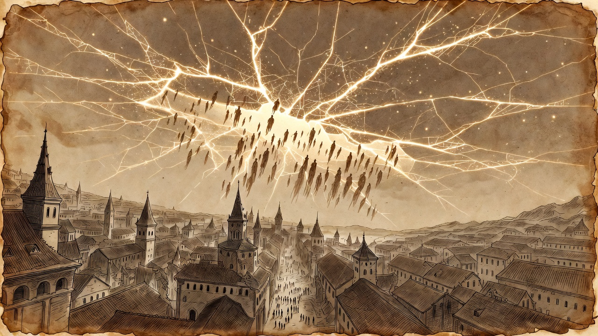
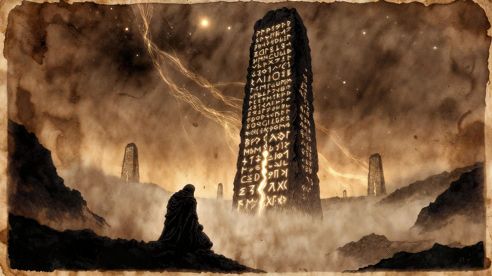
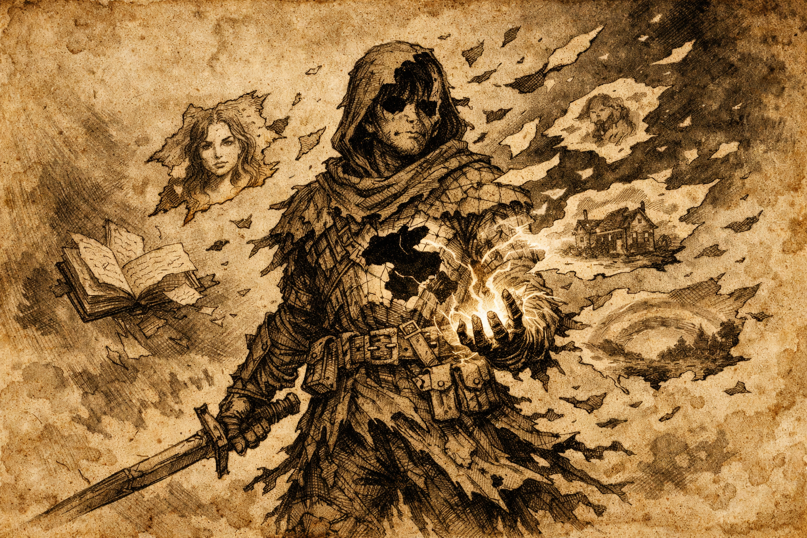
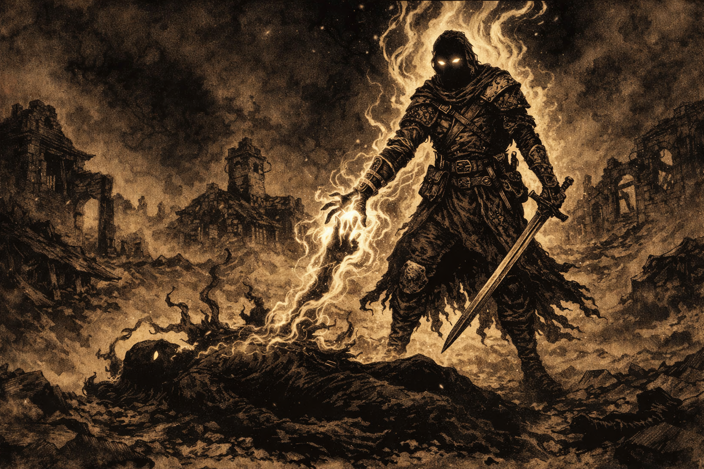
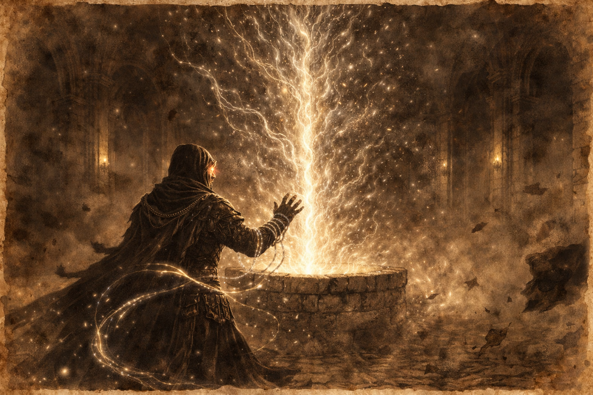

The Great Fracture

The Veil was never a shield. It was a membrane of compressed consequence. Beneath it, the Abyssal Weald acted as a pressure gauge: every unchecked cruelty, every bloodletting, every sin left unpunished added weight to a ledger humanity forgot it was writing. The architects of the Veil severely overestimated our restraint.
When the threshold broke, the Veil did not tear. It shattered simultaneously across every sky. Year Zero. The Veilfall. It was not an invasion; it was an eviction notice. The things that poured through the fractures were not foreign conquerors. They were returning residents, coming to claim the misery we had built for them.
The Whispering Monoliths

Seventy-seven columns of petrified Law, jutting from the earth where the Veil's lattice was densest: at the confluences of ley lines, near ancient cities, across battlefields where the ledger of consequence was most heavily written. Each stands between forty and two hundred meters tall, smooth-faced except for the faintly luminous script cycling through their surfaces — the language of divine Law, which no living scholar has successfully translated, though thousands have tried and several have lost pieces of themselves to the attempt. They are silent until they are not. A Monolith will go decades without selecting a candidate, then choose three in a single night. The Archive has stopped trying to predict them and started trying to position hunters near them when possible.
Their function is simple and absolute: they are not sources of power. They are the conditions under which power is legitimate. When a Monolith selects a candidate and the Vow is accepted, it grants access to attunement resonance — the ability to channel specific fundamental forces. The price it names is always load-bearing. The Monolith does not negotiate. It does not make mistakes about what you can least afford to give.
Their purpose, insofar as an object can have one, is continuation — the preservation of Law's structure against the Abyssal resonance that has flooded the world since the Fracture. They hold no faction loyalties. Both the Awakened and the Tethered draw from their framework, and both pay for the privilege in different ways. The Monoliths do not care. They simply endure.
The Monolith remains standing. The Monolith remains active. But its resonance is now filtered through the Veilborn's essence, and what it broadcasts is no longer Law. It is Abyssal Mandate — the same crushing, inarguable authority, oriented entirely toward entropy. Those who approach an Eclipsed Monolith seeking a Vow receive a Corruption Compact instead: their attunements mutate and destabilize, bending toward Veilborn-adjacent forms. Eidolons whose Vows are anchored to an Eclipsed Monolith experience Resonance Debt events at three to five times normal frequency, as the corrupted Monolith feeds on their Vow-investments from beneath. A Veilborn who achieves Eclipse gains a Law-anchor — a permanent broadcast of Abyssal resonance that corrupts the surrounding landscape, accelerates Veilborn evolution in the region, and draws lesser Veilborn into a territorial hierarchy centered on the Eclipsing entity.
The Resonance Debt

Before the Fracture, the Veil quietly collected the price of power. Now the ledger is broken, and the cost arrives without warning. Every activation of a Vow, every invocation of attunement resonance, crystallizes a fragment of the Eidolon and shatters it mid-stride. This is the Resonance Debt — the Law's enforcement mechanism, unmoored from its original structure and operating on an auditing schedule that answers to no one.
It does not take what you can spare. It takes an entire branch of attunement. The memory of your mother's face. The neurological instinct to breathe. You never know when the Debt will collect, only that the subtraction is absolute. You survive by fighting with the pieces of yourself that remain.
The Inquisition has noted, and the Archive has declined to formally dispute, that Resonance Debt events shed fragments into the environment as raw spiritual pollution — fractured pieces of human identity, stripped of context and structure, radiating sin-adjacent emissions that the Veilborn actively consume. Every Eidolon activation that triggers the Debt is, in the Inquisition's accounting, a feeding event for the enemy. The Archive's counter-position is that the alternative — not activating, not hunting — is worse. Neither faction has proven the other wrong.
The Veilborn: Sin-Eaters

They are not invaders. The Archive's first notation in every classification document, consistently ignored in the field. The Veilborn are not a foreign force — they are the weight of what humanity accumulated, finally arriving to be accounted for. In form, they resist stable description. Each Veilborn is assembled from the specific texture of sin that generated it: a Veilborn born from a city's history of systematic cruelty manifests differently from one crystallized out of private grief, different again from one that emerged where desperation overwhelmed every principle its progenitors held. What they share is density. They are heavier than their size suggests, and the air near them carries a specific quality — the feeling of a debt coming due. Some Veilborn have almost soft edges. The Archive has found this consistently more dangerous than the sharp-edged kind.
They are born at Phase I as silhouettes of compressed sin, indiscriminate and catastrophic. They evolve through the Seven Apostasies — not by aging but by consuming. Each phase makes them more dangerous not because they become stronger, but because they become more precise. A Phase I Veilborn is a catastrophe. A Phase V Veilborn is a catastrophe that has been planning for three weeks.
They hunt both the Awakened and the Tethered with equal appetite, though not equal priority. Eidolons are preferred prey — a high-rank Eidolon carries significant Astral Essence and generates Resonance Debt emissions that the Veilborn actively consume. The Tethered, eroded by the Severance Toll, are harder to locate by instinct — Veilborn hunt emotionally, and a sufficiently advanced Tethered leaves almost no emotional signature for them to track. The Inquisition has noted this as a tactical advantage. They have not disclosed it to the Archive.
PHASE I — WRATH: Pure reflex. Everything within proximity is engaged. Cannot retreat — retreat requires intention, and intention requires a self. Roughly 60% of all Veilborn never evolve past this phase. The Archive considers this fortunate.
PHASE II — PRIDE: Selection begins. The Veilborn develops a preference for prey that resists — that fights back, that has something worth breaking. Phase II entities bypass weak targets to reach stronger ones. They have begun to understand hierarchy and are placing themselves at its top through force.
PHASE III — ENVY: Observation begins. Phase III entities watch Eidolons for extended periods before engaging — studying movement, Vow-power deployment, social structures. They want what the Eidolons have. Since they cannot obtain it through exchange, they obtain it through consumption. This is when Veilborn first begin Eclipsing Monoliths.
PHASE IV — GLUTTONY: Consumption becomes compulsive. The entity no longer simply hunts — it absorbs everything within reach, including things it cannot use. Monolith Eclipsing becomes catastrophic at this phase, not from strategy but from the inability to remain near a power source without corrupting it.
PHASE V — SLOTH: Counterintuitively the most dangerous documented phase. The Veilborn becomes still. It has fed enough to develop patience — and patience in a Veilborn is more destabilizing than rage. Phase V entities select territory and wait. They are not resting. They are preparing.
PHASE VI — LUST: Singular obsession crystallizes. One target — a specific hunter, a specific Monolith, a specific city — pursued with total exclusion of everything else. No Phase VI Veilborn has ever been successfully redirected. The Archive has stopped trying.
PHASE VII — GREED: Theoretical. No confirmed Phase VII entity has been destroyed and documented. The Archive's models suggest it would cease to resemble an organism and begin to resemble a condition — a geological event rather than a creature. Identification criteria were drafted. The field teams assigned to draft them did not file subsequent reports. The document remains open.
The Awakened: Eidolons

They begin human. This is not sentimental — it is diagnostic. The Awakened are human beings who survived contact with Veilborn essence and, rather than being dissolved by it, integrated it. Whether this is resilience or misfortune depends entirely on how far they progress. The first extraction is involuntary. The rest are deliberate. Eidolons continue hunting, continue extracting, continue displacing their humanity with the essence of what they kill — because the alternative is to stop, and stopping is not survival. It is simply dying more slowly with a clearer head.
Physically, early-rank Eidolons are difficult to distinguish from capable humans. By Rank B, the differences have become legible: their stillness is wrong, their reaction times structurally pre-cognitive, their movements more reflex than thought. By Rank S, they are the Zenith — entities wearing human forms as a residual habit, operating at efficacy levels that strain the Archive's classification frameworks, and paying for every activation with pieces of themselves the Resonance Debt will not return.
The Awakened do not, as an institution, consider the Inquisition a serious threat. They consider them a distraction with poor tactical priorities. This assessment is incorrect, and the Archive has flagged it as a dangerous blind spot fourteen times in the last six years. The researchers who drafted those reports subsequently lost significant attunements to the Resonance Debt. The Archive has not established whether this is coincidence. It has not stopped filing the reports.
0–25: Pre-debt range. Functionally human. The Archive does not consider Eidolons in this range useful enough to monitor closely.
26–50: Debt has collected at least once. Changes are legible. The Eidolon knows something is wrong; they simply cannot always name what.
51–75: High displacement. Entire attunements and emotional spectra at risk. Archive flags for routine monitoring — meaning their records are checked monthly for behavioral anomalies they will not be informed of.
76–89: Shadow-monitoring begins. Eidolons in this range have been documented exhibiting Veilborn-adjacent behavioral signatures: territorial instinct, passive emotional residue detection, a preference for prey that resists. The Archive does not decommission them. They are too useful. The Archive simply ensures they are pointed at something and watches.
90+: Zenith threshold. The Archive's internal models suggest that above 90, an Eidolon's core identity signature is functionally indistinguishable from a Phase III Veilborn in dormancy. The Archive has not published this finding. The Eidolons above 90 would not care if they had.
The Iron Inquisition: The Tethered

The Iron Inquisition was not founded as a counterweight to the Archive. It was founded as a correction. Their central thesis is methodological: every Eidolon is a catastrophe in slow motion, and the Archive is a machine for producing them at scale. When the Resonance Debt collects — when an Eidolon activates a Vow and the Law exacts its price — the shed fragments are not neutral residue. They are sin-adjacent emissions: fractured pieces of human identity, stripped of context, radiating the same spiritual pollution that filled the original ledger. The Veilborn consume this. In the Inquisition's accounting, every Rank-S Eidolon is a hunter who kills Veilborn with one hand and fuels them with the other — buying tactical victories while slowly rewriting the conditions of the next Veilfall.
The Inquisition hunts the Awakened not from ideology but from arithmetic. They have done the math and found it does not balance. Their own approach to power was designed in deliberate opposition to everything the Archive represents.
Where the Archive submits to the Monolith, the Inquisition confronts it. Where the Eidolon accepts the Law's terms, the Tethered refuse them — and force something else out instead.
Every Monolith is a structure of absolute order. But every structure has an inverse. Beneath the Law of Solar radiance lies the anti-solar: the corona's true consuming fire, the light dense enough to become darkness, the star at the moment before collapse. Beneath Lunar clarity lies the moon stripped of its guidance function — cold gravity without mercy, the tide that drowns rather than guides. Beneath Iron's structural law lies its inversion: the dissolution that holds by consuming what it was supposed to protect. The Tethered draw from this shadow-side. Not from the Law's face, but from its eclipse.
What they receive are Inverted Attunements — the curse-versions of divine power, given names distinct from the originals because the Inquisition does not pretend what they hold is the same thing at a different angle. Cinder Sovereign: luminance burned past the point of giving, warmth inverted to consuming gravitational totality — the sun's face after it stops being a star. Pale Hunger: the moon stripped of its guidance function, cold pull without the mercy of direction, the tide that only arrives and never recedes. Voidsteel: structural authority evacuated of purpose, the fortress whose walls hold by consuming their own foundation from within. The Inquisition calls these honest. They are the power the Monolith was never designed to yield, extracted by force from a Law that did not consent to the transaction.
First year, first Rites: Full pages. Names, descriptions, specific things someone said once that mattered, reasons the name is in the Register at all.
Rank C–B transition: Entries have shortened. Less story. More notation. The Tethered writes faster, not because they care less, but because they have begun to understand what they are racing against.
Rank A: Three to seven names. No anecdotes. A name and a single descriptor. Sometimes just a name.
Rank S: Some Registers are empty. Not because the Tethered has no one left. Because the world's reduced capacity to hold them means there is nothing left to record — the people are still there, but the attachment the Register was meant to protect has already been taken, and recording its absence serves no operational purpose.
The Inquisition issues new Registers at each rank promotion. The old ones are archived in the Inquisition's restricted vaults. The Resonant Archive has requested access to these documents six times. The Inquisition has declined six times. The Archive has noted this is the only category of information the Inquisition has refused to share. The Inquisition has not responded to this notation. They do not need to explain to the Archive what grief looked like before the world was taught to stop feeling it.
The Toll does not reach inward. The Resonance Debt claims the self; the Monolith cannot extract from a domain already spoken for. Instead, the Toll reaches outward: into the world's relational architecture. Not the Tethered's memories. Not their faculties. The world's capacity to hold them emotionally — the mechanism of human cognition that assigns weight, significance, and grief to a person — finds less and less to hold when it reaches for a Tethered soldier after each Rite. Their name remains. Their record survives intact. Their colleagues know their rank, history, and accomplishments. But the part that should make any of that matter — the attachment, the personal weight — is extracted Rite by Rite until even people who have fought beside them for a decade describe them the way they describe weather: accurately, efficiently, and without the part that knows what it means to be inside the storm.
The Inquisition does not call this a mercy. They call it the honest price of refusing the Law. The Awakened lose who they are while the world still holds them. The Tethered remain whole while the world forgets to. Both factions find the other's condition comprehensible in theory and unbearable in contemplation. Neither has said this to the other directly.
The Great Conflict

Three answers to the same broken world. None of them adequate. All of them necessary, which is the most damning thing that can be said about any of them. The Resonant Archive hunts Veilborn for survival — extracting Astral Essence from kills to fuel their Eidolons, accepting the Resonance Debt, and maintaining the position that power at any price is still better than the alternative. The Iron Inquisition hunts the Awakened as the primary threat — not because the Veilborn are harmless, but because the Inquisition has concluded the Archive is accelerating the same collapse it exists to prevent. The Veilborn hunt both, with patience, and have calculated that the two factions will do enough damage to each other that what remains will be manageable.
There is an argument, filed once and not revisited, that this stalemate is structural rather than accidental — that the post-Veilfall world requires precisely this three-way impossibility to avoid total Abyssal collapse; that the moment any one faction achieves decisive advantage, the ledger becomes unbalanced in a direction worse than the war. The Eidolon who filed this argument lost her primary attunement to the Resonance Debt two days after submission. The document was archived. The Inquisition has not received a copy, because the Archive did not send one, because no one alive in the Archive has bothered to remember that the Inquisition might care. The Inquisition, for their part, has not asked. This also may be structural.
Classification of Power
| Rank | The Awakened (Eidolons) | The Veilborn (Monsters) | The Inquisition (Tethered) |
|---|---|---|---|
| S | The Zenith. Humanity absent. What persists is a vessel for the Law — indistinguishable in gravity from the Monoliths themselves. Each activation sheds enough Resonance Debt to feed a Phase II Veilborn. | Apocalypse-Class. Phase V+. Eclipsers of the Law. The Archive does not send hunters. It sends armies and accepts the losses. | The Sundered. Intact within. Erased without. The Severance Toll has collected fully. Their Cinder Sovereign, Pale Hunger, and Voidsteel attunements operate at maximum inversion depth. The world does not grieve them. They have stopped requiring it to. |
| A | The Elite. Entire attunements and emotional spectra erased by the Debt. They wear their bodies like borrowed armor. Resonance Debt emissions at this rank are flagged by the Inquisition as priority threat events. | Malice-Lords. Phase III–IV. Sentient. They no longer simply destroy; they manipulate, occupy, and Eclipse Monolith resonance with cold precision. | Sovereign Tethered. The Severance Toll has claimed most external attachment. Battle records survive intact. Relationships do not. Their Pale Hunger, Cinder Sovereign, or Voidsteel attunements have matured into forms that bear no resemblance to what the Monolith originally intended to yield. |
| B | Veteran. The Debt has collected. They know what is missing. They have learned to compensate and have stopped expecting it back. | Ravagers. Phase II–III. Destruction is intentional. Hierarchy has formed. They have begun to make decisions about who deserves to be hunted first. | Eclipse Pyres. The Toll has begun collecting. People who knew them feel less. They have started logging personal connections before they are severed. Their Inverted Attunements are stabilizing around their shadow-cores. |
| C | Slayer. Enough extraction to feel the change beginning. Not enough to name what the final cost will be. | Sin-Stalkers. Phase I–II. The first signs of selection emerging. They have started to prefer specific prey and begun moving with something resembling intent. | Purge Knights. First Rites completed. Family letters are getting shorter. They have been told this is normal. They will discover it is permanent. Their Inverted Attunements have not yet shown their full inversion. |
| D | Initiate. First extractions completed. The hollowing is present and illegible — the most dangerous interval for both the Eidolon and anyone assigned to monitor them. | Hollows. Phase I. Pure reflex. Incapable of retreat because retreat requires intention, and intention requires a self. | Ember Sworn. Newly Rite-completed. The Toll has not collected yet. The Inverted Attunement is strange in ways they cannot name — they have been told this is the inversion stabilizing. This is technically accurate and tells them nothing useful. |
| E | Survivor. Fully human. Fully fragile. The world is actively working to correct this. | Echoes. Residual entities. An impression of a Veilborn. They will not stay this way for long. | Vigilants. Pre-Rite. Still fully held in the world's memory. They do not know yet that the power the Sundering will return to them is the shadow-face of what they came to seek. |